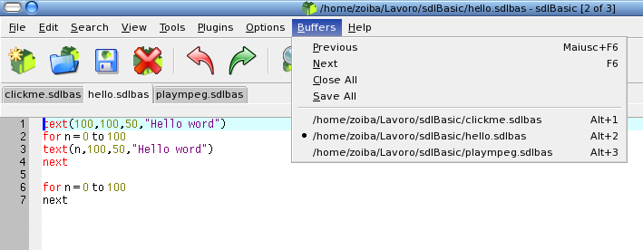

Buffers
sdlBasic
editor may use up to 50 buffers each containing a project file. Simply
click tabs to switch buffers. When you work with many opened
files the Buffers menu can be used to switch between buffers,
either by selecting the file name or using the Previous (F6) and Next
(Shift+F6) commands.

When all the buffers contain files, then opening a new file causes a
buffer to be reused which may require a file to be saved. In this case
an alert is displayed to ensure the user wants the file saved.